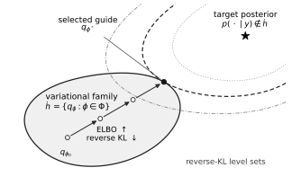

Variational Inference Foundations#
Posterior approximation by optimization#
Let \(x\in\mathcal{X}\subseteq\mathbb{R}^d\) denote the unknown parameters and let \(y\) denote the observed data. We assume that the prior density \(p(x)\) and likelihood \(p(y\mid x)\) are defined with respect to fixed base measures. Their base measures are the references relative to which densities are defined, such as Lebesgue measure for a continuous variable or counting measure for a discrete variable. Fixing these references lets us manipulate the densities consistently. The product is the joint density
The evidence is
and we assume \(0<p(y)<\infty\). Bayes’ rule then gives the posterior density
Sampling represents this posterior by dependent draws. VI instead selects an approximation from a tractable family
where \(\phi\) denotes the variational parameters. The density \(q_\phi\) is also called the variational distribution or the guide (Blei et al., 2017).
Reverse Kullback–Leibler divergence and the evidence lower bound#
For a guide \(q_\phi\) that is absolutely continuous with respect to the posterior, every event that is impossible under the posterior is also impossible under the guide. The reverse Kullback–Leibler (KL) divergence is
If absolute continuity fails, we define this divergence to be \(+\infty\). It is nonnegative and equals zero exactly when the two densities agree almost everywhere. Define the posterior support
On this set, one support-safe proof uses
with \(f(0)=1\) by continuity and equality only at \(t=1\). Absolute continuity implies that \(q_\phi\) vanishes outside \(\mathcal{S}_y\), so
The KL divergence is not symmetric. In particular, the reverse orientation penalizes guide mass placed where the posterior density is small more directly than posterior mass missed by the guide. A restricted family may consequently represent one mode while missing another.
When the expectation is well defined, the ELBO is
When the KL divergence and ELBO are finite, substituting Bayes’ rule gives the exact identity
The model and the observed data remain fixed while \(\phi\) varies. Therefore, maximizing the ELBO is equivalent to minimizing the reverse KL divergence. When a maximizer exists, it satisfies
The geometry of this optimization is illustrated in Fig. 22.
{kind=link}

Fig. 22 Variational inference as best-in-family approximation. Each point in the shaded set \(\mathcal{Q}\) is a candidate distribution \(q_\phi\), while the target posterior \(p(\,\cdot\mid y)\) lies outside this family. The curves are schematic level sets of \(q\mapsto\operatorname{KL}(q\|p(\,\cdot\mid y))\). Optimization moves within \(\mathcal{Q}\) toward \(q_{\phi^*}\), where the lowest attainable level set reaches the variational family. Here, “closest” refers only to the directed reverse-KL objective: KL divergence is asymmetric and is not a metric.#
The variational family may not contain the posterior, the optimum need not be attained, and the ELBO is generally nonconvex. A computed approximation can therefore contain three distinct errors: restriction to the chosen family, Monte Carlo error in the estimated objective or gradient, and optimization error.
Gaussian guide families#
On unconstrained coordinates \(x\in\mathbb{R}^d\), Gaussian guides provide a useful progression from inexpensive independent coordinates to a fully coupled covariance. In the constructions below, \(\mu,\lambda,\rho\in\mathbb{R}^d\), exponentials are componentwise, and \(I_d\) is the \(d\times d\) identity matrix.
Diagonal covariance#
Define
The diagonal Gaussian guide is
The logarithmic scale parameters \(\lambda\) are unconstrained, while every variance \(e^{2\lambda_i}\) is positive. With \(\epsilon\sim\mathcal{N}(0,I_d)\), a draw is
This family is inexpensive, but it cannot represent posterior correlations.
Diagonal-plus-low-rank covariance#
Let \(1\leq k<d\), define
and let \(U\in\mathbb{R}^{d\times k}\). The guide
has a positive-definite covariance because \(D_\rho^2\) is positive definite. The low-rank term captures correlations in at most \(k\) directions. Independent variables \(\epsilon\sim\mathcal{N}(0,I_d)\) and \(\eta\sim\mathcal{N}(0,I_k)\) give the sampling representation
Full covariance#
Let \(L\in\mathbb{R}^{d\times d}\) be lower triangular. Write its diagonal entries as \(L_{ii}=e^{\lambda_i}\) and collect its \(d(d-1)/2\) unconstrained subdiagonal entries in \(u\). Then
The positive diagonal makes \(L\) nonsingular and \(LL^{\mathsf T}\) positive definite. The corresponding draw is
A full covariance can represent arbitrary Gaussian dependence, but it requires \(O(d^2)\) variational parameters and linear-algebra work.
Constraints and dependence#
A Gaussian guide on the physical parameters is inappropriate when \(\mathcal{X}\) is constrained. Let
be a differentiable bijection with nonsingular derivative \(DT(x)\). We place an unconstrained guide \(\widetilde q_\phi\) on \(z=T(x)\). The change-of-variables formula gives the physical-space guide
To generate a physical draw, sample \(z\sim\widetilde q_\phi\) and set \(x=T^{-1}(z)\). This unconstrain–approximate–transform pattern is central to automatic variational inference (Kucukelbir et al., 2017).
For a positive scalar, \(T(x)=\log x\) gives
For a scalar in the open unit interval,
and therefore
Direct constrained guides are also possible. For example, \(\operatorname{Gamma}(x\mid\alpha,\beta)\) with shape \(\alpha>0\) and rate \(\beta>0\) is supported on positive values, while \(\operatorname{Beta}(x\mid\alpha,\beta)\) with \(\alpha,\beta>0\) is supported on \((0,1)\). A product such as
imposes variational independence. A structured factorization such as \(q_{\phi_1}(x_1)q_{\phi_2}(x_2\mid x_1)\) can retain selected dependencies.
Pathwise gradients#
ELBO optimization requires derivatives of expectations whose sampling law depends on \(\phi\). Let \(r(\epsilon)\) be a fixed base density and let \(g_\phi\) map a draw \(\epsilon\sim r\) to a draw \(x=g_\phi(\epsilon)\sim q_\phi\). The map need not be one-to-one. Define
The ELBO becomes an expectation under a distribution independent of \(\phi\):
When differentiability and integrability conditions permit exchanging the gradient and expectation,
The derivative on the right is the total derivative: it includes the explicit dependence of \(h_\phi\) on \(\phi\) and its dependence through \(g_\phi(\epsilon)\). This construction is the pathwise, or reparameterization, gradient (Kingma and Welling, 2014).
Stochastic ELBO optimization#
Define the negative ELBO objective
For \(S\) independent base-noise draws \(\epsilon_1,\ldots,\epsilon_S\sim r\), its Monte Carlo estimator is
Automatic differentiation through this estimator gives a stochastic pathwise gradient under the preceding regularity conditions. Fresh base-noise draws at each optimization step avoid optimizing a fixed Monte Carlo sample. Increasing \(S\) usually reduces gradient noise at greater computational cost.
Model parameters#
Suppose the joint model also contains parameters \(\theta\), so its density is \(p_\theta(x,y)\). Define \(\operatorname{ELBO}(\phi,\theta)\) by replacing \(p(x,y)\) with \(p_\theta(x,y)\) in the ELBO definition above. The exact decomposition becomes
Jointly optimizing \(\phi\) and \(\theta\) maximizes a lower-bound surrogate for the evidence. Alternating guide and model-parameter updates is commonly called variational expectation-maximization. For a fixed \(\theta\), profiling out the guide gives
If the infimum of the KL gap is zero for every relevant \(\theta\), the profiled ELBO equals the log evidence. Otherwise, it is generally only a lower-bound surrogate and may select a different \(\theta\).
Data minibatches#
Now suppose \(y=(y_1,\ldots,y_N)\) and the observations are conditionally independent given \(x\):
For a uniformly sampled minibatch \(B\subset\{1,\ldots,N\}\) of size \(b\), the scaled log-joint estimator
is unbiased for \(\log p(x,y)\) with respect to the minibatch. The prior and the guide entropy appear once; only the summed likelihood is scaled. Guide samples and data minibatches are separate sources of stochasticity. Stochastic variational inference uses such minibatch constructions to reduce the cost of large-data optimization (Hoffman et al., 2013).
Assessing a variational approximation#
Variational inference combines a variational family, a gradient estimator, and an optimization procedure. The family determines which posterior shapes can be represented. Reparameterization expresses samples as differentiable functions of noise drawn from a fixed distribution, which makes Monte Carlo gradient estimates possible. Optimizing the ELBO then selects a member of the chosen family. Even an exact global maximizer is only optimal within that family under \(\operatorname{KL}(q_\phi(x)\|p(x\mid y))\); it may still miss posterior modes, tails, or dependence.
Assessment must therefore match the intended use of the posterior. Posterior predictive checks compare the observations with replicated data generated from the fitted approximation and the observation model. Comparisons across guide families or, when feasible, with MCMC can reveal sensitivity to the approximation, while repeated initializations and Monte Carlo variability help separate optimization error from limitations of the family.
The next notebook applies a full-rank Gaussian guide to unconstrained coordinates for the catalysis parameters; a separate transformation maps those coordinates to physically constrained quantities. The reconstruction notebook uses a diagonal Gaussian guide over an overcomplete set of particle locations and optimizes an augmented ELBO. The two examples show how guide structure and objective design adapt the same variational workflow to different inverse problems.